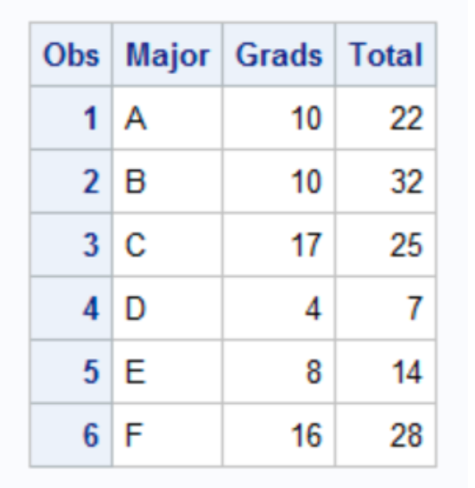
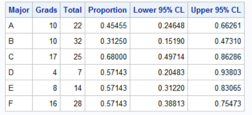
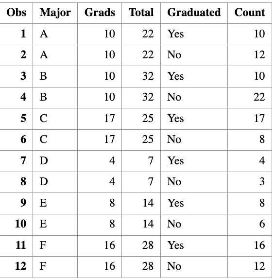
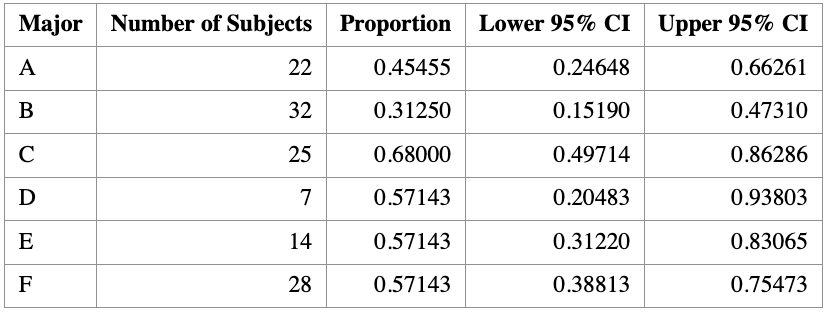

8 One Sample Proportion Test
Learning Objectives
- Apply the binomial test to conduct statistical inference for a population proportion.
8.1 Motivation
Suppose we observe a categorical variable with two levels, such as
SMOKES = 1: smoker
SMOKES = 2: non-smoker
In this setting, we are often interested in making inference about the population proportion of interest, such as the proportion of people who smoke.
We denote this population proportion by \(p\).
Common inferential goals include:
- Estimating the population proportion \(p\)
- Constructing a confidence interval for \(p\)
- Performing a hypothesis test for \(p\)
Specifically, we may test
\[ \begin{aligned} H_0 &: p = p_0, \\[0.5em] H_1 &: \begin{cases} p \neq p_0, & \text{(two-sided)},\\ p < p_0, & \text{(left-sided)},\\ p > p_0, & \text{(right-sided)}. \end{cases} \end{aligned} \]
8.1.1 Sampling Distribution of the Sample Proportion
Let \(\hat{p}\) denote the sample proportion, computed as
\[ \hat{p} = \frac{X}{n}, \]
where
- \(X\) is the number of successes,
- \(n\) is the sample size.
When the sample size is sufficiently large (typically \(n \ge 30\)), the sampling distribution of \(\hat{p}\) is approximately normal:
\[ \hat{p} \sim N\left(p, \frac{p(1-p)}{n}\right). \]
This normal approximation forms the basis for both confidence intervals and hypothesis testing for a population proportion.
8.1.2 Confidence Interval for a Proportion
A \((1-\alpha)\times 100\%\) confidence interval for \(p\) is given by
\[ \left[ \hat{p} - Z_{\alpha/2}\sqrt{\frac{\hat{p}(1-\hat{p})}{n}}, \quad \hat{p} + Z_{\alpha/2}\sqrt{\frac{\hat{p}(1-\hat{p})}{n}} \right]. \]
Here, \(Z_{\alpha/2}\) is the standard normal quantile satisfying
\[ P(Z \ge Z_{\alpha/2}) = \alpha/2, \quad Z \sim N(0,1). \] Moreover, this normal approximation of \(\hat{p}\) is also used to perform hypothesis testing for \(p\).
8.1.3 Standard Error of the Sample Proportion
The standard error of \(\hat{p}\) is
\[ \text{SD}(\hat{p}) = \sqrt{\frac{\hat{p}(1-\hat{p})}{n}}. \]
This expression highlights an important principle:
The uncertainty in an estimate decreases as the sample size increases.
8.1.4 Interpretation: Effect of Sample Size
Consider two examples where the estimated proportion is the same.
A small college has 8 physics majors, and 5 of them graduate within four years.
\[ \hat{p} = \frac{5}{8} = 0.625 \]
The standard error is
\[ \text{SE}(\hat{p}) = \sqrt{\frac{0.6 \times 0.4}{8}} \approx 0.17. \]
An English department graduates 50 out of 80 students.
\[ \hat{p} = \frac{50}{80} = 0.625 \]
The standard error is
\[ \text{SE}(\hat{p}) = \sqrt{\frac{0.6 \times 0.4}{80}} \approx 0.05. \]
Does this make sense?
In practice, when the normal approximation may not be reliable (e.g., small \(n\)), we will instead rely on exact binomial methods, which do not require large-sample assumptions.
8.2 Computation
Suppose a college has six majors, labelled A, B, C, D, E, and F. For each major, we observe:
+ the number of students who graduated within four years (Grads), and
+ the total number of students in that major (Total).DATA Grads;
INPUT Major $ Grads Total @@;
DATALINES;
A 10 22 B 10 32 C 17 25
D 4 7 E 8 14 F 16 28
;
RUN;
It is easy to write a short DATA step to compute the empirical proportions and a 95% confidence interval for each major.
DATA GradRate;
SET Grads;
/* Empirical proportion */
p = Grads / Total;
/* Standard error under normal approximation */
StdErr = SQRT(p * (1 - p) / Total);
/* 95% Wald confidence interval */
z = QUANTILE("normal", 1 - 0.05/2);
LCL = MAX(0, p - z * StdErr); /* Lower bound */
UCL = MIN(1, p + z * StdErr); /* Upper bound */
LABEL p = "Proportion"
LCL = "Lower 95% CI"
UCL = "Upper 95% CI";
RUN;
The output shows that although majors D, E, and F have the same four-year graduation rate (57%), the estimate for the D group, which has only seven students, has twice as much variability as the estimate for the F group, which has four times as many students.
8.3 Automating the Computations with PROC FREQ
In the previous section, we computed the Wald confidence interval for each major using a DATA step. That approach is straightforward, but it becomes inconvenient if we want other binomial confidence intervals (e.g., exact/Clopper–Pearson, Wilson, etc.). A convenient alternative is to use PROC FREQ with the BINOMIAL option. However, PROC FREQ expects the data in an event / nonevent format (a binary outcome with a frequency count), rather than the events / trials format (Grads, Total) we currently have.
So we first convert each major into two rows: + Graduated=“Yes” with Count = Grads + Graduated=“No” with Count = Total - Grads
Step 1: Convert events/trials into event/nonevent format
/*--------------------------------------------------------------
Convert Event/Trials format (Grads, Total)
into Event/Nonevent format (Graduated, Count)
--------------------------------------------------------------*/
data GradFreq;
set Grads;
Graduated = "Yes";
Count = Grads;
output;
Graduated = "No";
Count = Total - Grads;
output;
run;
proc print data=GradFreq;
run;
Step 2: Run PROC FREQ to compute binomial CIs by major
/*--------------------------------------------------------------
Use PROC FREQ to analyze each major separately and compute
binomial confidence intervals for Pr(Graduated="Yes")
--------------------------------------------------------------*/
proc freq data=GradFreq noprint;
by notsorted Major;
tables Graduated / binomial(level="Yes" CL=wald);
weight Count;
output out=FreqOut binomial;
run;Step 3: Print a clean summary table
proc print data=FreqOut noobs label;
var Major N _BIN_ L_BIN U_BIN;
label _BIN_ = "Proportion"
L_BIN = "Lower 95% CI"
U_BIN = "Upper 95% CI";
run;
8.4 Visualization of Binomial Proportion
It is often helpful to visualize estimated proportions together with their confidence intervals.
When plotting several proportions on the same graph, it is a good idea to sort the groups in a meaningful way—most commonly by the estimated proportion itself. If two groups have the same estimated proportion, the sample size can be used as a tie-breaker.
8.4.1 Why visualization matters
A single number rarely tells the whole story. Plotting proportions with confidence intervals allows us to:
- Compare graduation rates across majors at a glance
- Assess uncertainty in each estimate
- See how sample size affects precision
Groups with smaller sample sizes tend to have wider confidence intervals, reflecting greater uncertainty.
8.4.2 Adding a reference line
It is often informative to add a reference line representing the overall proportion, regardless of group membership.
For the graduation data in this example, the overall proportion of students who graduate in four years is
\[ \hat p_{\text{overall}} = \frac{65}{128} \approx 0.5078. \]
This reference line helps contextualize each major’s graduation rate relative to the overall average.
Tip:
You can obtain the overall proportion in SAS by repeating thePROC FREQanalysis without aBYstatement.
8.4.3 Including sample size on the plot
Because uncertainty depends strongly on sample size, it is good practice to display the number of observations per group directly on the graph.
In SAS, this can be done using the YAXISTABLE statement, which adds a table aligned with the y-axis showing the sample size for each group.
8.4.4 Interpreting the plot
A typical plot of binomial proportions with confidence intervals shows:
- Points: estimated proportions
- Error bars: 95% confidence intervals
- Vertical reference line: overall proportion
- Table entries: number of students in each major
Such a graph clearly illustrates that majors with fewer students (for example, very small departments) have much wider confidence intervals than majors with larger enrollments.
8.4.5 Practical visualization advice
- If there are 10 or more categories, consider using alternating background color bands to make it easier to associate confidence intervals with groups.
- Always label axes clearly (e.g., Proportion on the x-axis).
- Include the confidence level (e.g., “95% CI”) in the caption or title.

8.4.6 Summary
This section demonstrates how visualization complements numerical output:
PROC FREQprovides estimated proportions and confidence intervals.- Graphing proportions with confidence intervals makes comparisons intuitive.
- Including sample sizes helps readers understand why some intervals are wider than others.
Well-designed graphics are one of the most effective ways to communicate results from binomial proportion analyses.